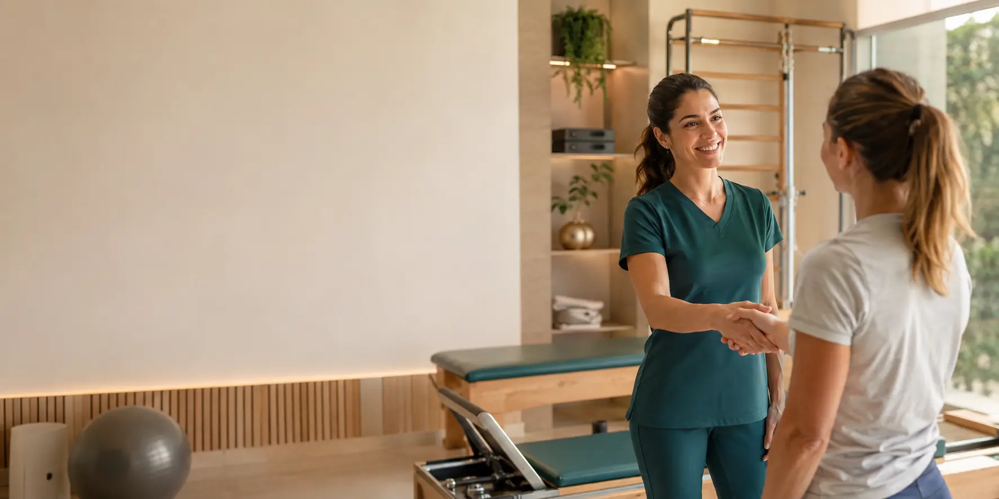
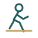

Avaliação fisioterapêutica
Um primeiro passo para entender você.
R$ 150,00 / sessão
Solicitar orçamento 
SEU MOVIMENTO IMPORTA
Cuidado individual, escuta e acolhimento.
Fisioterapia que acompanha o seu ritmo.
Cuidado humanizado. Movimento com propósito.

CUIDADO EM CADA ETAPA
Um plano de cuidado pensado para você
e para os movimentos da sua vida.
Cuidado humanizado. Movimento com propósito.

MAIS LEVEZA NO DIA A DIA
Um espaço acolhedor para cuidar de você,
com atenção aos seus objetivos.
Cuidado humanizado. Movimento com propósito.
COMO PODEMOS AJUDAR
Da primeira avaliação ao acompanhamento,
um olhar atento para o que você precisa.
Um primeiro passo para entender você.

Retome os movimentos que fazem parte da sua vida.
Valores ilustrativos para o projeto acadêmico. O plano de atendimento é definido após avaliação.
CONHEÇA A MOVITARE
A Movitare nasceu da ideia de que cuidar começa por ouvir. Nosso propósito é criar um espaço em que cada pessoa seja acolhida e participe ativamente do seu cuidado.
Unimos atenção individual e um ambiente tranquilo para acompanhar você, respeitando sua história, sua rotina e seus objetivos.
HISTÓRIAS QUE ACOLHEM
Depoimentos fictícios e fotos ilustrativas para demonstração acadêmica.
Fui acolhida desde a primeira conversa. Gostei da atenção aos detalhes e das explicações em cada etapa.
O plano foi pensado para a minha rotina. Me senti ouvido ao falar sobre meus objetivos.
Um ambiente tranquilo e um atendimento cuidadoso. Cada encontro respeitou o meu ritmo.
Gostei de entender o propósito de cada etapa do acompanhamento. Isso me trouxe confiança.
A atenção e a escuta fizeram a diferença na minha experiência. Me senti muito bem recebida.
UM ESPAÇO PARA VOCÊ
Um ambiente acolhedor para dar o próximo passo no seu cuidado.
Movitare FisioterapiaVAMOS CONVERSAR
Conte um pouco sobre o que você procura.
Estamos aqui para ouvir você.